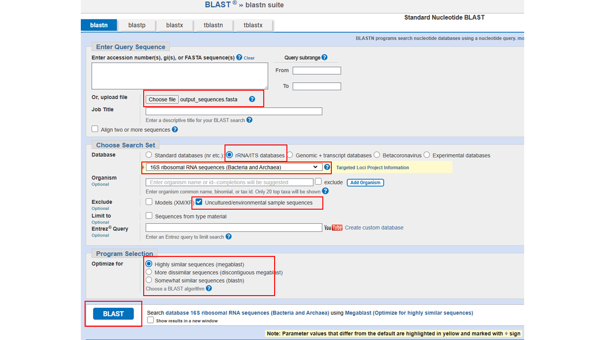

Chapitre 4 Vos ASVs et BLAST
4.1 Vos ASVs
Vous avez vue en classe une figure représentant l’abondance relative des principaux genres bactériens présents sous la langue ainsi que sur la paume de la main dominante de chacun des scientifiques de votre classe. Vous aimeriez maintenant générer une figure similaire à celle présentée en classe mais comprenant uniquement vos échantillons et incluant l’ASV. Pour ce faire, vous devrez utiliser vos nouvelles connaissances des différentes fonctions R!
Commencez par créer un nouveau document de type R markdown oũ vous pouvez votre script avec ces commandes qui installerons puis chargerons les librairies que vous devriez avoir à utiliser et chargerons le tableau de données.
Code
# Installer les librairies
install.packages("devtools")
install.packages("randomcoloR")
install.packages("ggplot2")
install.packages("dplyr")
install.packages("forcats")
# Charger les librairies
library(randomcoloR)
library(ggplot2)
library(dplyr)
library(forcats)
library(devtools)
install_github("helixcn/seqRFLP")
library("seqRFLP")
# Charger le tableau de données
df_raw = read.csv("https://raw.githubusercontent.com/karinevilleneuve/BIO1410-2026/refs/heads/main/data/bio1410_2026_ADN.csv", header = TRUE)Maintenant que vous avez importé le tableau de données, vous devez utiliser R pour réaliser chacune de des étapes suivantes. Pour vous aidez vous pouvez utiliser l’intelligence artificielle, questionner vos démonstratrices, revoir les fonctiosn présentées précédemment, analyser le code des sections suivante, etc. Ci-dessous vous trouverez une des solutions possibles pour compléter chacune des étapes dans un block chaché, simplement appuyer sur ▶ Code pour le révéler. Il ya plus d”une façon d’arriver à un même résultat alors n’hésitez pas à essayer et comparer diverses méthodes.
Filtrer le tableau de données pour conserver uniquement les séquences appartenant à votre scientifique.
Puisque noous voulons illustrer uniquement le 10 genres bactériens les plus abondant, il faut, pour chaque région, grouper ensemble les ASVs appartenement à un même genre et additionner leur valeur d’abondance. Les valeurs obtenues doivent ensuite être transformées en abondance relative. Finalement, les genres bactériens qui ne font pas partie des 10 genres les plus abondants doivent être regroupés sous la catégories “Autres”.
Générer le graphique.
Étape 1. Filtrer le tableau de données
Code
#### ---- Code ---- ####
unique(df_raw$Scientifique) # (1)
df_sub = subset(df_raw, Scientifique == "") # (2)
#### ---- explication ---- ####
# (1) Afficher les différentes options de noms de scientifique
# (2) Filter le tableau de données en inscrivant entre les guillements le nom de la scientifique Étape 2. Grouper et calculer l’abondance relative
Code
#### ---- Code ---- ####
df_abond_rel = df_sub %>%
filter(Abundance > 0) %>% # (1)
group_by(Source) %>% # (2)
mutate(Abondance_relat = Abundance / sum(Abundance)) %>% # (3)
ungroup()
valider = df_abond_rel %>% # (4)
group_by(Source) %>%
summarise(Total = sum(Abondance_relat))
#### ---- explication ---- ####
# (1) Puisqu'il est impossible de diviser 0, nous retirons les ASVs qui ont une abondance de 0
# (2) Pour réaliser les opérations mathématiquement séparémment pour chaque région nous devons
# utilisons la fonction group_by() pour indiquer à R dans quel colonne se trouve nos catégories (Régions)
# qu'il doit traiter séparémment.
# (3) Pour obtenir l'abondance relative nous créons une nouvelle colonne "Abondance_relat" qui est
# le résultats de Abundance / sum(Abundance)
# (5) Nous validons que la somme est bien de 1 pour chacune des régions (Source) Étape 3.Générer la figure
Code
#### ---- Code ---- ####
df_top = df_abond_rel %>%
arrange(Source, desc(Abondance_relat)) %>% # (1)
mutate(Order = row_number()) %>% # (2)
mutate(Taxonomie = ifelse(Order < 11, paste(Phylum, Genus, OTU, sep = "; "), "Autres")) %>% # (3)
group_by(Source, Taxonomie) %>% # (4)
summarise(Abondance_relative = sum(Abondance_relat)) # (4)
#### ---- explication ---- ####
# (1) Trier nos données par Source puis en fonction de l'abondance relative
# (2) Pour chaque source, associer un numéro de 1 à x dans la nouvelle colonne "Order" (1 étant le plus abondant)
# (3) Générer une nouvelle colonne "Taxonomie" et pour remplir cette colonne, si la valeur de Order est inférieur
# à 10, on copie colle la valeur de la colonne Phylum et colonne Genus, si la valeurs est supérieur, on assigne
# la valeur "Autres"
# (4) Finalement, nous voulons regrouper les taxons "Autres" ensemble
# alors nous reproduisons les étapes de groupement et addition réalisées précéement (2.4)
# Créer une palette de couleur unique
nbr_unique_tax = length(unique(df_top$Taxonomie)) # Compter le nombre de taxon unique (devrait être ~ 20)
custom_colors = distinctColorPalette(k = nbr_unique_tax) # Générer une palette de 20 couleur différentes
color_names = unique(df_top$Taxonomie) # Associer le nom de nos bactéries à chacune des couleur
my_palette = setNames(custom_colors, color_names) # Combiner les couleurs et leur nom
my_palette[["Autres"]] = "lightgrey" # Associer une valeur gris pâle au groupe "Autre"
# Utiliser la fonction fct_relevel pour que le groupe "Autres" figure en premier dans la légende
df_top$Taxonomie = fct_relevel(df_top$Taxonomie, "Autres")
graph = ggplot(df_top, aes(x = Source, y = Abondance_relative, fill = Taxonomie)) +
geom_bar(position="stack", stat="identity") +
xlab("Région") +
ylab("Abondance relative") +
theme_minimal() +
scale_fill_manual(values = my_palette) +
scale_y_continuous(expand = c(0,0), limits = c(0,1)) +
scale_x_discrete(expand = c(0,0)) +
guides(fill = guide_legend(nrow = 10)) # Spécifier que nous voulons 10 lignes max pour la légendre
# Enregistrer la figure
ggsave(graph, filename = "abondance_relative.pdf", width = 8.5, height = 4, units = "in")4.2 BLAST
Maintenant que vous pouvez visuellement constater quel ASVs sont les plus présents, nous voulons obtenir une classification plus précise que le Genre pour l’ASV de votre choix. Pour une classification jusqu’à l’espèce et peut-être même à la souche, nous utilisons le logiciel en ligne BLAST du National Institute of Health (NIH) qui prend comme input une séquence d’ADN.
Une fois de plus, vous devez utiliser vos nouvelles connaissances en R pour produire un fichier de type fasta contenant la séquence d’ADN de l’ASV que vous voulez classifier avec BLAST. Comme précédéement la solution se trouve ci-dessous.
Solution
Code
#### ---- Code ---- ####
DNA = df_abond_rel %>%
filter(OTU == "") %>% # (1)
select(OTU, DNA_string) %>% # (2)
unique() # (3)
dataframe2fas(DNA, file = "output_sequences.fasta") # (4)
#### ---- explication ---- ####
# (1) Inscrire entre les guillemets l'ID de l'ASV d'intérêt puis comme précédemment,
# nous utilison filter() pour filtrer le tableau de données
# (2) Nous sélectionnons uniquement les colonnes d'intérêt (OTU et DNA_string)
# (3) Nous spécifions unique() au cas ou l'ASV serait présent dans les deux régions
# (inutile d'avoir deux fois la même séquence)
# (4) Générer le fichier fastaFournir à BLAST le fichier fasta produit
- Se rendre sur le logiciel en ligne BLAST du NCBI
- Choisir l’analyse
Nucleotide BLAST(BLASTn) - Sélectionner
Choose fileet sélectionner le fihcier produits
- Choisir la banque de données appropriée à laquelle comparer votre séquence
- Utiliser la collection de nucléotides
- Exclure les organismes environnementaux et non cultivés
- Choisir l’algorithme de BLAST désiré (essayer à la fois les algorithmes
BLASTnetMegaBLAST
- Lancer l’analyse (bouton
BLAST). - Après lecture et analyse du fichier sortant effectuer un imprime-écran incluant les trois premiers résultats de l’analyse (trois premiers taxons identifiés). Vous devrez inclure cette image dans l’annexe de votre travail. Réalisez un tableau à inclure dans le corps du texte comprenant les colonnes suivantes;
- Per. Ident.
- Query cover
- E.value
Vous pouvez aussi consulter pour votre plaisir personnel :
- L’arbre phylogénétique (Distance tree of results)
- Les résultats de l’alignement (MSA viewer)
